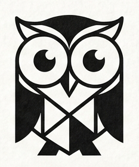
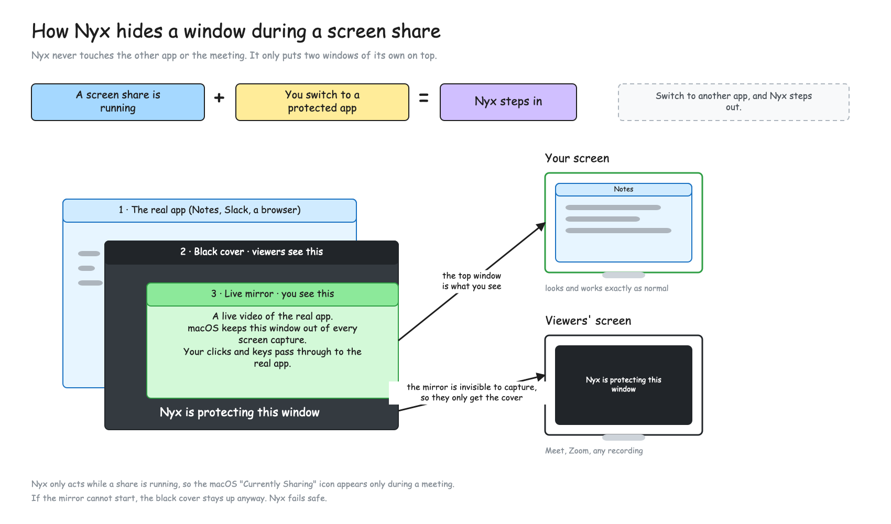

NyxBlacks out the apps and sites you choose while something is capturing your screen. You keep working — viewers see a placeholder.
curl -fsSL https://raw.githubusercontent.com/aristocrat71/nyx/nyx-v0.1.0/install.sh | bash
macOS 14 or later · Apple Silicon and Intel · needs Screen Recording permission
Nyx is protecting this window
Add an app from the dashboard, or hit ⌃⇧L while using it. Every window it owns is covered.
List youtube.com and the browser is covered while a matching tab is front. Subdomains count, look-alikes do not.
Draws only while a screen capture is actually running. Idle otherwise.
If the local preview dies the placeholder stays up, and the menu bar icon turns red.
A black cover that capture software sees, and a live mirror that only you see. Your clicks pass through to the real app.
